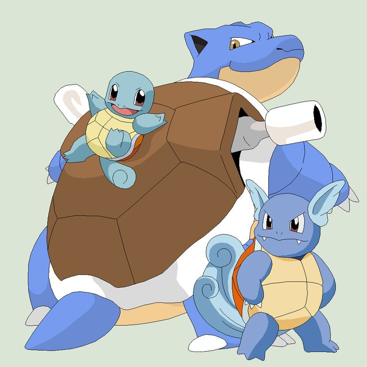

Squirtle is a small Pokémon that resembles a light blue turtle. While it typically walks on its two short legs, it has been shown to run on all fours in Super Smash Bros. Brawl. It has large brown eyes and a slightly hooked upper lip. Each of its hands and feet have three pointed digits. The end of its long tail curls inward. Its body is encased by a tough shell that forms and hardens after birth. This shell is brown on the top, pale yellow on the bottom, and has a thick white ridge between the two halves.
Squirtle-->Wartortle-->Blastoise
Squirtle was one of the first Pokémon designed by Ken Sugimori. Squirtle's name is a portmanteau of the words squirt and turtle. It was originally going to be named "Karigon" (カメゴン), a portmanteau of kame (カメ), the Japanese word for "turtle", and "dragon" (ドラゴン doragon), as it was originally conceived as a turtle-like creature with a dragon's head, and was called this in early development.